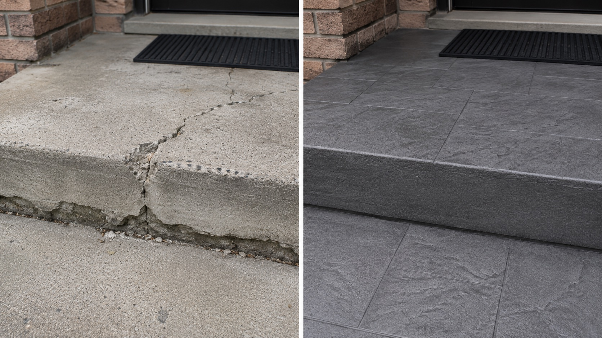

Every May in the GTA, the calls come in like clockwork. Winter has finally let go, the snow is gone, and homeowners are walking up to their porches, patios, and driveways for the first time in months — and seeing cracks. Hairline cracks. Spider-web cracks. Cracks running the full length of a step. Sections that have lifted, chipped, or flaked off.
And almost without exception, the first contractor they call says the same thing: "You need to tear it out and start over."
The honest answer is that, in the majority of cases, that's not true. Cracked concrete can usually be resurfaced — properly, durably, with a finish that looks better than what was there originally. But not always. The truth is in the type of crack, the cause behind it, and whether the contractor doing the work knows how to prep the substrate correctly.
Here's the full, no-fluff breakdown from 14+ years of resurfacing concrete in Toronto, Mississauga, Brampton, Vaughan, and across the GTA.
The Short Answer
Yes — most cracked concrete can be resurfaced. What changes the answer isn't whether there are cracks. It's why there are cracks. Surface cracks, freeze-thaw spalling, and most settlement-era hairlines are fully resurfaceable once they're properly repaired. Structural cracks caused by an active problem — heaving, foundation movement, tree roots — need the underlying issue fixed first. After that, resurfacing is still usually possible.
"In our experience across thousands of GTA surfaces, less than 1 in 10 of the concrete jobs quoted for full replacement actually needed replacement. The rest were resurfaceable — and the homeowners would have spent $10,000–$20,000 they didn't need to."
The 3 Types of Cracks (And What to Do About Each)
Not every crack is the same. To know whether your concrete can be saved, you need to know what kind of crack you're looking at.
1. Hairline & Surface Cracks
These are thin, shallow cracks that don't go all the way through the slab. They usually form from normal shrinkage as the original concrete cured, or from minor freeze-thaw stress over years. They look bad but are not structural.
Can it be resurfaced? Yes, easily. We open the crack with a diamond blade, fill it with a polymer-modified repair mortar, and the overlay bridges right over. You'll never see it again.
2. Spalling, Pitting & Flaking
Common across GTA porches, steps, and driveways from years of road salt and freeze-thaw cycles. The top layer of concrete has chipped or flaked off, leaving rough, pitted, or crater-like surfaces. The slab underneath is usually fine.
Can it be resurfaced? Absolutely — and this is one of the most rewarding transformations we do. We rebuild the spalled areas with a structural patch material, profile the substrate, then apply the overlay. The finished surface is smoother and stronger than the original.
3. Structural & Settlement Cracks
Wider cracks — typically 1/4 inch or more — that go fully through the slab. Often you can see one side has shifted vertically or pulled apart from the other. Caused by heaving (often from frost or expansive soil), settlement of the base, or pressure from tree roots or a foundation issue.
Can it be resurfaced? Sometimes — but the cause must be addressed first. If the slab is still actively moving, no overlay will hold. If the movement has stopped (an old settlement that finished decades ago), we can stabilize it, bridge with a flexible bonding system, and resurface. If it's still moving, replacement or sectional repair is the honest answer.

Quick Reference: Can Your Concrete Be Resurfaced?
| Crack Type | Cause | Resurfaceable? |
|---|---|---|
| Hairline cracks | Normal shrinkage | Yes — easily |
| Surface cracks | Minor freeze-thaw stress | Yes — easily |
| Spalling / flaking | Salt damage, freeze-thaw | Yes — common fix |
| Pitting | De-icing chemical damage | Yes — rebuild & coat |
| Stable old settlement crack | Past base movement (now stopped) | Yes — with stabilization |
| Active heaving | Frost or expansive soil | No — must address cause first |
| Tree root displacement | Roots growing under slab | No — root removal & sectional repair |
| Major delamination (>25%) | Failed substrate | Replacement is more honest |
Why Most Contractors Won't Tell You This
The reason "tear it out and replace" is the default answer for most concrete contractors isn't because it's the right answer. It's because it's the easier, more profitable answer for them.
Full replacement is straightforward work — demo, dispose, form, pour. Most general concrete crews already have the equipment and the workflow. Resurfacing is different. It requires diagnosing the substrate, knowing which materials bond to which conditions, and executing a multi-layer system with discipline. Many contractors simply don't have that skill set — and rather than say so, they default to recommending the work they can do.
The result is thousands of GTA homeowners spending $12,000–$25,000 per year on full replacements when a $3,000–$7,000 resurfacing job would have solved the problem and looked better.
If a contractor quotes you for full replacement after a five-minute walk-through, without taking core samples, sounding the slab for hollow areas, or asking about drainage and history — be skeptical. A proper assessment takes 30–45 minutes. Anyone shorter than that is selling you a job, not diagnosing your surface.
The Right Way: Prep, Repair, Resurface, Seal
When we resurface a cracked concrete surface, here's exactly what happens — in order. Skipping any of these steps is why most "cheap resurfacing" jobs fail within a year.
Step 1 — Diagnose
We sound the slab with a hammer to find hollow or delaminated areas. We assess cracks for active movement using crack monitors when needed. We check drainage, look at how water moves across the surface, and identify root causes — not just symptoms.
Step 2 — Repair
Cracks are chased open with a diamond blade so the repair material can grip. Spalled and pitted areas are cleaned to sound substrate and rebuilt with structural patch mortar. Any loose or hollow sections are removed and reconstructed.
Step 3 — Profile
The entire surface is mechanically ground or shot-blasted to create the correct concrete surface profile (CSP). Without this, the overlay won't bond properly — this is the single most common reason DIY and bargain-contractor jobs fail.
Step 4 — Resurface
A polymer-modified overlay — our Jewelstone system for exterior, microcement for interior — is applied in your chosen color, texture, and pattern. The polymer makes it flexible enough to handle GTA freeze-thaw cycling without cracking the way standard concrete does.
Step 5 — Seal
A penetrating sealer locks out water, salt, oil, and UV. For driveways and pool decks, we apply additional protective topcoats. This is what gives the surface its longevity — typically 10–15 years with normal maintenance.
Real GTA Example: Mississauga Porch Saved From Replacement
A homeowner in Mississauga called us after getting two quotes for full porch replacement — $14,500 and $17,200. The porch had a 1/2-inch crack running diagonally across the main slab and significant spalling along the front edge. Both contractors said the cracks were "too far gone" to resurface.
When we assessed it, the crack was a stable old settlement crack — the porch had moved years ago, the soil had compacted, and there was no active movement. The spalling was textbook de-icing salt damage. The slab itself was completely sound.
We stabilized the crack with a flexible polyurethane sealant, rebuilt the spalled edge with structural patch mortar, profiled the substrate, and applied a Jewelstone herringbone overlay in warm charcoal. Total cost: $4,800. Total time on site: 3 days. The homeowner saved over $9,500, kept the structure of their original porch, and ended up with a porch that looks dramatically better than a plain replacement would have.

When Replacement Genuinely Is the Right Call
To be straight with you — there are cases where we will not resurface a slab, and we'll tell you honestly that replacement is the better choice. Those cases are:
- Active heaving — the slab is still moving with frost cycles. Any overlay will fail.
- Major base failure — the sub-base under the concrete has washed out or collapsed. The whole foundation needs to be rebuilt.
- Tree root pressure — roots growing under the slab will keep pushing it. The root issue must be solved first; sometimes sectional replacement is faster than working around it.
- Severe delamination over a large area — when more than ~25% of the surface is hollow or loose, the substrate isn't reliable enough to bond to. Replacement is the honest answer.
- Active drainage failure — if water is undermining the slab and that can't be redirected, no surface coating will solve it.
In every one of those cases, we'll tell you straight. We'd rather lose the job and refer you to a replacement crew than put our name on something that won't hold.
How to Find Out — Without Paying Anyone
Before you commit to a $15,000 replacement, get a real opinion. We'll look at your surface for free and tell you honestly whether it can be resurfaced. The fastest way is to send us a few photos on WhatsApp — close-ups of the cracks, plus a wide shot showing the whole area — and we'll give you our read along with a ballpark cost. No pressure, no salesperson at the door.
If we think it's a clear resurfacing job, we'll book an on-site visit to give you an exact quote. If we think it needs replacement, we'll tell you that too. Twenty-plus years of doing this work in the GTA has taught us that being straight with people is the only thing that builds a business that lasts.